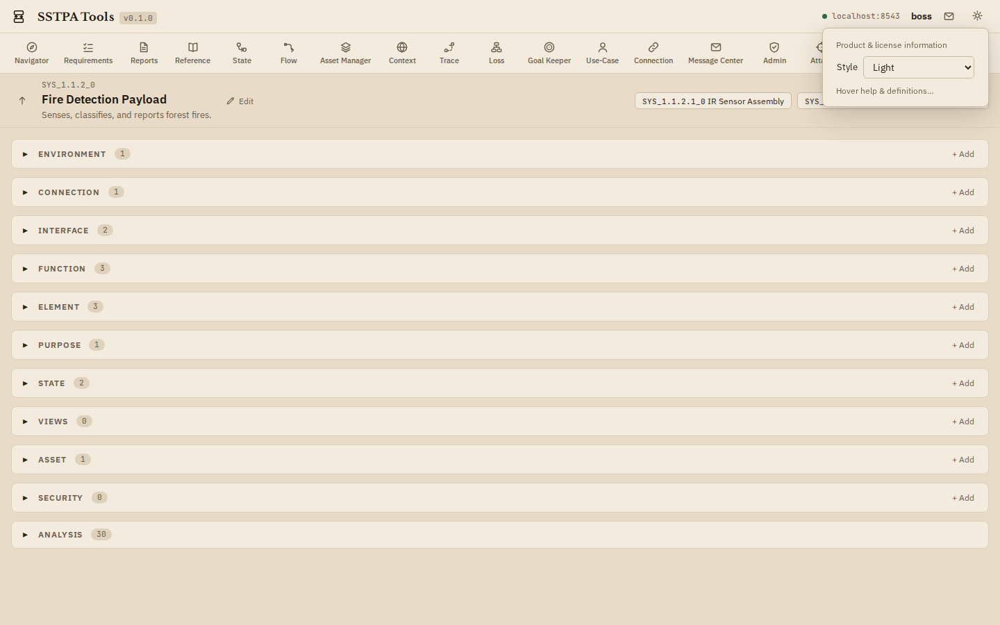
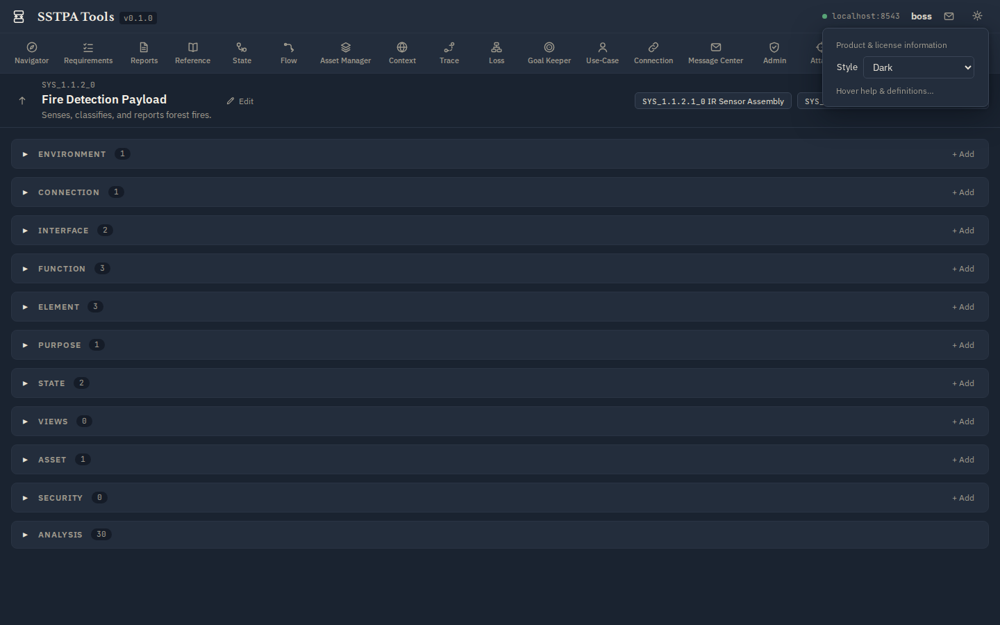

Deploy-ready documentation
SSTPA Tools User Guide
How to use the SSTPA Tools GUI and walk the 14-step methodology with the Add-on Tools mapped in Workflow V1. This guide is instructional: it shows where to click, what each tool is for, and how screens look in Light and Dark styles.
FireSat orientation. Screenshots use the shipped FireSat example. For asset, loss, attack, and assurance work, select SYS_1.1.2_0 Fire Detection Payload (under Space Segment → FireSat Satellite). Architecture and connection views also appear at higher tiers such as Space Segment.
Start here
1. Using the GUIBranding bar, Control Panel, SoI panel, Main Panel, Data Drawer, gear menu, themes, login state.
2. Start and manage a projectCapability / System hierarchy, select SoI, create and edit via Main Panel + Data Drawer.
3. Methodology workflowSteps 1–14 overview, revision loop, hierarchical recurse, step × tool matrix.
Add-on Tools (first appearance order)
NavigatorSteps 1, 2, 14 — select SoI, hierarchy, clone, associate.
RequirementsSteps 1, 2, 7, 9, 13 — allocate, parent, verify.
ConnectionSteps 1–2 — Connections and Interface participants.
Asset ManagerStep 3 — Assets, Regime, Criticality, Assurance.
StateStep 4 — state-transition diagrams.
ContextSteps 4–6, 12 — Environment, VALID_IN, Hazard, Loss allocation.
ReferenceSteps 5–6, 8, 11 — ATT&CK / NIST / EMB3D research & assign.
FlowSteps 2, 7, 13 — Functional Flow & STPA Control Flow.
ControlsSteps 8–9 — Security Controls Baseline & validation criteria.
TraceStep 10 — state-scoped Asset traces.
AttackStep 11 — actionable Attacks on susceptible entities.
LossStep 12 — Structured Attack Trees.
Goal KeeperStep 13 — GSN assurance argument & revision loop.
Hierarchical decomposeStep 14 — Element → child System via GUI + Navigator.
AppendixReports, Use-Case, Admin & Message Center notes.
Themes
Every major screen in this guide is shown in both styles. Switch in the running app via the gear menu Style control (Light / Dark). Dark uses the stored style name nocturne (bluish-grey slate, not pure black).
Light (parchment)

Dark (bluish-grey)
